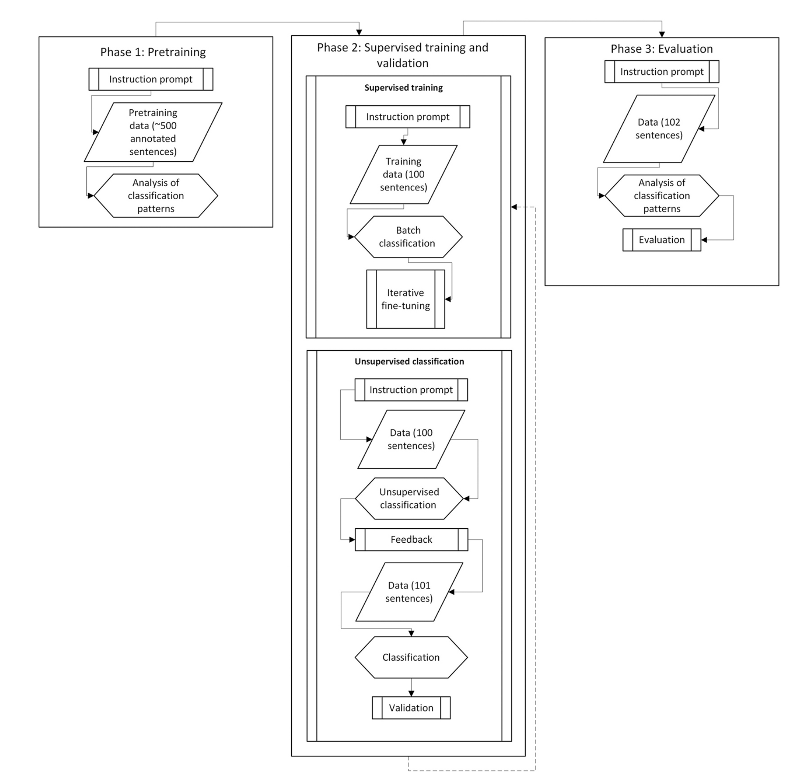
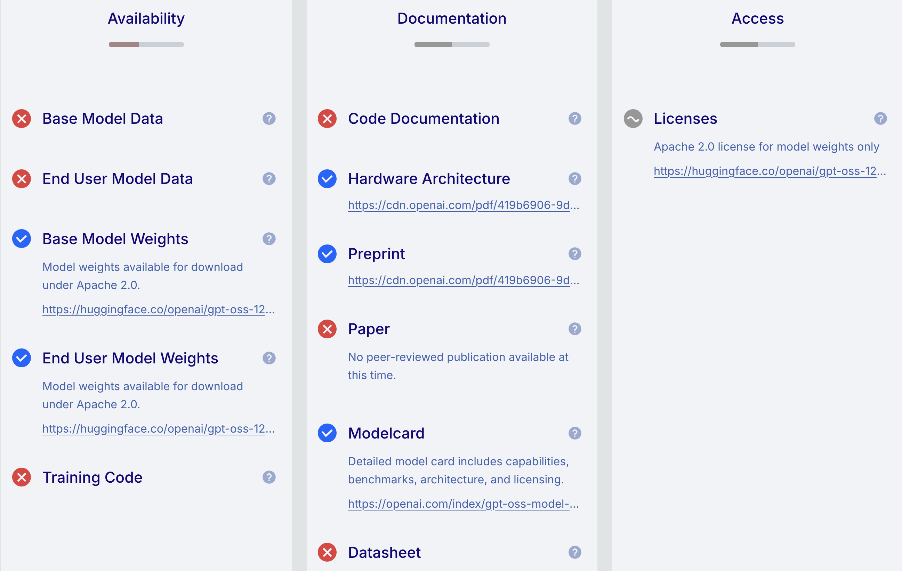

| Metric | Mistral 3.2 24B | GPT OSS 120B | Claude 3.5 Sonnet |
|---|---|---|---|
| Accuracy | 67% | 94% | 93% |
| Precision | 77.8% | 90.2% | 88.1% |
| Recall | 17.9% | 94.9% | 94.9% |
| F1-score | 29.2% | 92.5% | 91.4% |
| Matthews correlation coefficient | 0.25 | 0.88 | 0.86 |
On the replicability of LLM-based linguistic annotation: Insights from close and extended replications of Morin & Marttinen Larsson (2025) using open-weight LLMs
Abstract
Large language models (LLMs) are increasingly being leveraged for corpus annotation. In an early evaluation of such an application, Linguistics Vanguard published “a replicable method for automating grammatical annotation” (Morin & Marttinen Larsson 2025). Using Claude 3.5 Sonnet, a commercial model no longer available, it involved pretraining, as well as iterative training, validation, and evaluation phases. The study reported an accuracy of 93% and concluded that the pipeline may also be effective for other linguistic tasks, including in languages other than English. We first present a close replication, using the same data, but with two open-weight LLMs. While a 24B Mistral model did not perform as well, a 120B open GPT model yielded equally good results. This suggests that, as of 2026, commercial LLMs are not necessary for this type of annotation task. In a second extended replication, we tested the need for the extensive ‘conversational’ training process outlined in Morin & Marttinen Larsson (2025). We compared it to a simpler few-shot training approach, concluding that the procedure need not be as elaborate as in the original study. Our results have important implications for the replicability of linguistic research involving LLMs. Although the authors published their data and prompts, we found that details necessary for a close replication were missing. We use this replication study as a starting point for a broader discussion of how linguists approach the use of LLMs in corpus annotation, arguing that issues around accessibility, reproducibility, data leakage, and carbon footprint can and should inform the choice of our annotation tools. Finally, we warn against the risk of overgeneralising the results of a single, binary classification task in English to other tasks and languages.
Keywords: Replication, Large Language Models (LLM), Reproducibility, Generalisability, Corpus linguistics.
1 Introduction
Over the past few decades, linguists have gained access to ever-larger corpora of natural language. This presents great opportunities, but also significantly increases the workload associated with manually and/or semi-automatically preprocessing and annotating large amounts of data. The rise of large language models (LLMs) is therefore an exciting development for linguistic research, offering new possibilities to complement and extend existing automated methods for processing larger datasets and corpora. While the term LLM can be applied to earlier models familiar to linguists such as BERT (Devlin et al. 2019), as well as many longstanding NLP libraries such as spaCy (Honnibal & Montani 2017), for the present article, we reserve the term large language model (LLM) for generative pre-trained transformer models (Radford et al. 2018) designed to be queried via prompting. In recent years, a growing number of publications have reported on the usefulness of these so-called “conversational LLMs” (Morin & Marttinen Larsson 2025: 3) for a range of linguistic annotation tasks, such as the annotation of speech acts (Yu et al. 2024; Su & Ye 2025; Ostyakova, Mikhailova & Konovalov 2025), metaphor detection (Fuoli et al. 2026), word sense or function disambiguation (Fonteyn et al. 2024; Morin & Marttinen Larsson 2025), and political text classification and annotation (Heseltine & Clemm Von Hohenberg 2024).
While LLMs are increasingly prevalent in both linguistic research and our everyday lives, they also raise a number of concerns. For research purposes, specifically, their “black-box” nature — by which we mean that their training data, internal representations, and decision-making processes are not accessible — raises concerns over the transparency, reproducibility, and replicability of research produced with their assistance. Note, that although the terms have been used interchangeably in the past, we distinguish between reproducibility and replicability following the definitions of the FORRT (Parsons et al. 2022) and Turing Way (The Turing Way Community 2022) communities. We thus define reproducibility as the ability of an independent researcher or team to obtain the same results as an original study using the original data and methods. This is in contrast to replicability, where the same methods are applied, but on different data; and robustness, where the same data, but different methods are used (see Figure 1). Only if an effect can be reliably observed across different datasets with different methods, can we claim that it is generalisable.

In this study, we seek to replicate Morin & Marttinen Larsson (2025)’s methodological study, whose title claims to present a “replicable method” for leveraging LLMs for linguistic annotation. The original study was conducted using a commercial, closed-source LLM: Anthropic’s model Claude 3.5 Sonnet (Morin & Marttinen Larsson 2025: 4), which was released in June 2024 and retired in October 2025 (Killed by AI 2026), just 18 months after its release and only six months after the online version of the original article was published. We therefore sought to apply the original methodological pipeline to the same data, but using two open-weight LLMs, whose accessibility can be guaranteed for independent verification and future replications and whose parameters can be controlled to generate reproducible results (see Section 3). In an extended replication, we subsequently re-ran the classification task with a much simpler pipeline than that proposed in the original paper (see Section 4).
In the meantime, the authors of the original study have published a follow-up paper as a preprint (Morin & Larsson 2026), in which they further develop their “large-scale pipeline for automatic corpus annotation using LLMs” based on the same case study of the English consider construction. Although there are many similarities in its aims, this follow-up study adopts a different prompting approach than Morin & Marttinen Larsson (2025) and the case study involves a larger dataset. It also pursues a somewhat different focus, placing greater emphasis on the different types of evaluative uses of the consider construction and on the role of genre. However, the classification tasks are again conducted using a large, commercial model — this time from OpenAI [GPT-5; Morin & Larsson (2026): 17]. As such, we believe that evaluating the reproducibility of the original pipeline with smaller, open LLMs remains a relevant and worthwhile undertaking.
While large, cloud-based, proprietary LLMs continue to top performance benchmarks, open LLMs have made significant progress in closing this performance gap (Manchanda et al. 2025: 4). We consider open models to form a crucial part of the open research ecosystem (alongside open materials, open data, open code, open documentation, open access, etc.). Openness promotes transparency, reproducibility, and quality control; which are necessary features to support accessible, reliable, and credible empirical findings using AI technology (Liesenfeld, Lopez & Dingemanse 2023). In the discussion and conclusion section of their subsequent study, Morin & Larsson (2026) outline the limitations of using closed-source, commercial LLMs for linguistic research; however, both their studies do not test the necessity of relying on these products to achieve high accuracy. This is what we set out to do in the present study.
2 Research aims and questions
We are grateful to the original authors who published the data and materials associated with this project in an OSF repository (Morin & Marttinen Larsson 2024). The repository contains a “conversation transcript”, from which the iterative training process could be traced. It also contains several datasets for training and testing an LLM to differentiate between evaluative and non-evaluative uses of the verb consider, which can be illustrated with the following examples:
Cain is considered a master of American hard boiled crime fiction (…) (Morin & Marttinen Larsson 2025: 2)
Please consider all classes when punching number in to spread-sheet and designing new items (Morin & Marttinen Larsson 2025: 2).
In example a. the verb consider constitutes an evaluation of the subject. Such evaluative constructions can be, and often are, formulated using consider as or consider to be. In example b., however, the meaning is equivalent to ‘take into account’ or ‘think about’, and has no evaluative component. The model classifies the sentences as ‘evaluative’, ‘non-evaluative’ or ‘?’ in ambiguous cases. these were then evaluated against a human gold standard, which also provided as part of the original replication package (Morin & Marttinen Larsson 2024).
In this study, we seek answers to the following three research questions (RQs):
Is the “replicable method” proposed in Morin & Marttinen Larsson (2025) independently replicable using the information and materials made available by the authors in the article and associated OSF repository?1
Following the original pipeline, can smaller, open models perform as well or better on Morin & Marttinen Larsson (2025)’s consider annotation task as Claude Sonnet 3.5 based on the accuracy metrics reported in Morin & Marttinen Larsson (2025: 6)?
If RQ2 is answered in the positive, can this also be achieved with a significantly less extensive training process than that proposed in Morin & Marttinen Larsson (2025)?
While the close replication seeks answers to RQ1 and RQ2, our extended replication serves to answer RQ3. We test the performance of two open-weight LLMs: Mistral Small 3.2 24B Instruct 2506 (MistralAI 2026) (hereafter referred to as ‘Mistral 24B’), released in June 2025 under the Apache 2.0 license by the French AI company Mistral AI, and OpenAI’s GPT OSS 120B (OpenAI 2026), a larger model released in August 2025 under the same open license (hereafter ‘GPT 120B’). It is worth stressing that these are open-weight models, which means that the model parameters are publicly available for download, allowing researchers to inspect, fine-tune, and deploy them locally without relying on proprietary APIs. However, open-weight does not equate to open source: the training data and the code used to train these particular models are not publicly released, which places limits on the transparency of the models’ development and the extent to which their outputs can be fully audited (sec-General?).
The outcome of the replications will be compared and assessed based on the metrics Morin & Marttinen Larsson (2025) provided in their evaluation: Accuracy, Precision, Recall, F1 score, and Matthew’s correlation coefficient (Morin & Marttinen Larsson 2025: 6). We formulate the following hypotheses:
Hypothesis 1: The model OpenAI GPT OSS 120B performs as well as or better than Claude Sonnet 3.5 on the consider task, as measured by the accuracy metrics reported in Morin & Marttinen Larsson (2025).
Hypothesis 2: The model Mistral Small 3.2 24B Instruct 2506 performs as well as or better than Claude Sonnet 3.5 on the consider task, as measured by the accuracy metrics reported in Morin & Marttinen Larsson (2025).
Hypothesis 3: The annotation task can be performed with a significantly less extensive training process than that used by Morin & Marttinen Larsson (2025), while achieving performance comparable to or better than Claude Sonnet 3.5 according to the accuracy metrics reported in Morin & Marttinen Larsson (2025).
3 Close replication
Morin & Marttinen Larsson (2025) present a methodological pipeline leveraging an LLM for the automatic annotation of grammatical data, based on a case study of the evaluative consider construction in English. Having engaged in several iterative phases of training and testing with Claude 3.5 Sonnet (see Figure 2), Morin & Larsson (2026: 6) were able to achieve an accuracy of 93% compared to the gold standard provided by a human annotator.

Table 1 compares the original accuracy metrics with those of our close replication in which we attempted to follow the “replicable method” described in the original study as closely as possible, using the same data and matching the training and testing to a conversation transcript the authors provided (Morin & Marttinen Larsson 2024), but with two open LLMs. As explained in Section 1, the commercial LLM used in the original study, Claude Sonnet 3.5, was already deprecated by October 2025 (Killed by AI 2026), just six months after the online publication of the study. It goes without saying that the authors could not have predicted that Anthropic would retire this particular model so quickly, yet this extremely quick turnaround highlights the risks of attempting to build reproducible and sustainable research pipelines on the commercial services of AI companies.
In answer to RQ1, when designing our close replication, we found that essential information to independently replicate the annotation task was missing, forcing us to make some educated guesses as to the exact procedure. Most importantly, the original paper does not disclose how the pipeline was implemented at the programmatic level. This includes whether the web interface or an API was used2, how the model parameters were configured, which programming language was used, and how the datasets were provided as input to the models. Since the article only provides an outline of the iterative training and evaluation approach, many details of the actual process had to be inferred from the “conversation transcript” provided in the OSF repository. Reconstructing the procedure was further complicated by the lack of clear documentation regarding the sequence, purpose, and annotation status of the individual files, minor inconsistencies in file and variable naming, and uncertainties regarding how the datasets were fed into the model. It was unclear to us whether the authors used Claude’s web interface or an API when we designed our replication studies, but we chose to use an API to be able to share our scripts and ensure that our replications are as reproducible as possible (see Data Availability Statement). Whilst not essential, having access to the authors’ original analysis code would also have been useful to ensure more precise comparability of our results.
Based on accuracy compared to the original human gold standard, our open 120B GPT model showed comparable and even slightly better performance than Claude in the original study (GPT: 94% vs. Claude 93%), while the 24B Mistral model performed considerably worse (67%). This observation is reflected in the other metrics as well: While the GPT model’s performance is similar or better in all evaluated metrics, Mistral’s much smaller model fails to achieve comparable results. While Mistral’s 67% accuracy might initially sound moderately good, investigating these results as 2 x 2 matrices (see Data availability statement) reveals that it is heavily biased toward predicting ‘non-evaluative’ meaning. This poor accuracy is best observed in the extremely low recall of 17.9%. Given the distribution of consider-meanings in the test dataset (‘non-evaluative’ was the majority class accounting for 63/102, 62% of examples), a classifier that always predicted the majority class would also have achieved an accuracy of 62%. The imbalance in this dataset is common to many linguistic annotation tasks and serves as a reminder that, as did Morin & Marttinen Larsson (2025, Table 1), it is crucial to consider a range of metrics – not just accuracy – when assessing model performance.
Our results suggest that the replicability of Morin & Marttinen Larsson (2025)’s approach using open LLMs may depend on model size. In answer to RQ2, the open GPT model with 120B parameters performed at least as well than Claude 3.5 Sonnet, which is estimated to have around 440B parameters3, whereas the considerably smaller 24B Mistral model did not. We therefore have strong evidence in support of hypothesis 1, but can reject hypothesis 2.
4 Extended replication
Our close replication raised questions about the necessity of using very large, commercial LLMs to complete this type of binary linguistic classification task in standard English. With the present extended replication, we turn to testing the need for the extensive ‘conversational’ training and evaluation process proposed in Morin & Marttinen Larsson (2025) (see also Figure 2). To this end, we applied a much simpler, few-shot training approach using the best-performing open LLM from our first replication, GPT OSS 120B, and the original data.
As shown in Table 2, only instructing the GPT model using the pretraining set and then directly proceeding to testing, resulted in an accuracy of 94% (96/102). While the overall accuracy is equivalent to the open-weight GPT result in our close replication, recall is even higher at 100%, meaning that this simpler prompting strategy led to the GPT model not missing any positives (‘evaluative’ sentences). Compared to the original study, the accuracy metrics of this extended replication are also comparable: only precision is slightly lower (GPT: 86.7% vs. Claude: 88.1%), meaning that the open-weight GPT model predicted marginally more false positives (‘evaluative’ for actual ‘non-evaluative’) than Claude Sonnet 3.5 using the considerably more complex ‘conversational’ training procedure. The other accuracy metrics are higher than in the original study. These results provide clear support for our third hypothesis.
| Metric | GPT (close replication) | GPT (reduced training) | Claude (original study) |
|---|---|---|---|
| Accuracy | 94% | 94% | 93% |
| Precision | 90.2% | 86.7% | 88.1% |
| Recall | 94.9% | 100% | 94.9% |
| F1-score | 92.5% | 92.9% | 91.4% |
| Matthews correlation coefficient | 0.88 | 0.89 | 0.86 |
Thus, our results suggest that, when using a comparable open-weight LLM, similarly high accuracy rates can be achieved with a considerably less elaborate “training” process than that described in Morin & Marttinen Larsson (2025) [see also Morin & Larsson (2026)]. Although not directly comparable as they rely on more and different data, the results of our extended replication seem to align with those that the original authors report having obtained using the “simplified four-phase pipeline” that they propose in their follow-up study (Morin & Larsson 2026: 21-22). It is also worth noting that, using this new approach, they also report high accuracy for a more complex classification task of the consider construction (Morin & Larsson 2026).
5 Discussion
In the following, we draw on the results of our close and extended replications of Morin & Marttinen Larsson (2025) using open-weight models to reflect more generally on the replicability of corpus-processing pipelines that involve LLMs, focussing on their physical and intellectual accessibility, computational reproducibility and generalisability, as well as ethical and environmental concerns associated with the use of both (partially) open and closed models.
5.1 Accessibility
As mentioned in Section 1, we see open models as an integral part of Open Science practices, which also include open data, code, and materials, pre-registration and registered reports, open access publishing, and aim to make research more accessible, transparent, reproducible, replicable, and ultimately more robust and reliable (see e.g. Parsons et al. 2022). In the context of using LLMs for corpus annotation, however, several dimensions of accessibility must be considered. We begin with the physical accessibility of the models themselves.
A primary factor influencing physical accessibility is financial cost. At least in theory, LLMs are free to download and use. By contrast, the cost of commercial LLMs is highly variable, ranging from free tiers to expensive enterprise plans, and can change unpredictably. In their follow-up study, Morin & Larsson (2026) describe switching from Anthropic’s Claude models to OpenAI’s GPT-5, citing Anthropic’s substantially higher API fees as the reason. This transition allowed them to complete two classification tasks across 140,000 concordance lines for a total of $104 USD (Morin & Larsson 2026: 18). Whether or not this is considered a low or high cost will depend on the circumstances in which the research is carried out. What is certain is that this figure does not account for the costs incurred during the initial, more elaborate evaluation of the Claude Sonnet 3.5 model (documented in Morin & Marttinen Larsson (2025)) which was not reused for financial reasons.
Running open models, however, also involves costs in equipment and/or infrastructure. For example, Shakir & Le Foll (2026)’s comparison of 11 small to mid-sized open LLMs for corpus annotation was completed locally on a laptop equipped with an RTX 4090 GPU and 24 GB of RAM, a set-up that carries a considerable price tag. For the present project, such hardware was unavailable. Instead, we relied on [anonymised] publicly-funded cloud infrastructure that provides API access to open models to students and researchers at local universities. In this light, some “free” or “cheap” commercial models may appear more physically accessible than open ones, as they do not require local installation or access to a (publicly-funded) server. Yet, this apparent advantage is offset by a long-term financial vulnerability inherent to proprietary systems. If a commercial provider alters its pricing, discontinues a service, or restricts API access, as has already occurred in the recent past, a previously accessible method may suddenly no longer be usable.
The second dimension of accessibility is intellectual. A major argument in favour of commercial LLMs put forward by Morin & Marttinen Larsson (2025) and others is their availability through web-based chatbots, which require no coding skills. Indeed, Morin & Marttinen Larsson (2025: 7) justified their choice of a Claude model by noting that “it provides a powerful and accessible chat-based interface that does not require programming expertise,” thereby making their method “accessible to a maximally wide usership” (Morin & Marttinen Larsson 2025: 3). However, their latest publication appears to mark a shift away from this original motivation. The revised pipeline described in Morin & Larsson (2026) involves (admittedly relatively basic) Python code to interact with OpenAI’s API and to process data in batches. While this introduces a programming requirement, the authors provide their code, which they note “can be adapted to different APIs and research contexts” (Morin & Marttinen Larsson 2025: 14). This sharing of code significantly enhances the accessibility of their revised approach, even if it raises the technical bar for replication.
5.2 Reproducibility
Reproducibility is a cornerstone of scientific inquiry and is also crucial for the sustainability of our research. If the results of a study cannot be reproduced, its findings remain provisional, and the resources invested in producing them may yield only limited long-term value. In the context of LLM-based corpus annotation, achieving reproducibility is fraught with challenges that extend beyond the usual difficulties of documenting methodological detail. As the present reproduction study has shown, even with the best of intentions, providing sufficient information to allow for independent replication is more difficult than might be expected.
A fundamental obstacle is the inherent non-determinism of commercial cloud-based LLMs. Even when hyperparameters such as temperature can be set and are documented, the outputs of these models are never fully reproducible. This is due to a combination of factors, including server-side load balancing, model updates that occur without notice, and the fact that the exact model version, system prompt, and other aspects of a model’s internal state are usually opaque to the user. This inherent variability undermines the very notion of computational reproducibility, regardless of how meticulously the prompts and procedures are documented. The original study by Morin & Marttinen Larsson (2025) exemplifies several additional limitations that further constrain replicability. First, the specific Claude model used is no longer available. Second, important implementation details were not explicitly reported. In particular, the fact that the study relied on Claude’s chat-based interface rather than the API is only explicitly stated in the follow-up publication (Morin & Larsson 2026).
The use of a chat interface is particularly problematic for reproducibility, as it introduces additional layers of variability: interfaces may apply their own formatting, truncate, or even modify prompts without notifying the user, and they rarely allow for the systematic control of parameters that APIs typically afford. This lack of transparency makes it difficult for other researchers to determine whether differences between an original study and its replication are attributable to the models themselves, to implementation choices, or to other unaccounted factors.
A final reproducibility concern relates to the human gold standard used for evaluation. The original study appears to have relied on annotations from a single annotator, and it is unclear whether interrater agreement was assessed during the creation of this gold standard. Without such validation, the reliability of the evaluation itself is uncertain, which in turn complicates the interpretation of any replication attempt. If the gold standard is idiosyncratic or contains errors, then high accuracy scores may reflect overfitting to a particular annotator’s judgements rather than genuine model competence.
Taken together, these issues highlight that reproducibility in LLM-based research is not merely a matter of good documentation, but also of choosing tools and methods that are inherently more amenable to replication. Open models, when run locally with fixed versions and documented hyperparameters, offer a greater degree of control and transparency. However, as we discuss in the next subsection, even locally-run open models present their own challenges with respect to generalisability and environmental impact.
5.3 Generalisability
In their conclusion section, Morin & Marttinen Larsson (2025: 7) claim to have “put forward this annotation method as a replicable one, which linguists can use for the analysis of other grammatical constructions, in English and in other languages”. While the authors also acknowledge that “individual parameters, instructions, and evaluation criteria are of course bound to vary depending on the specific construction under study” and that some languages will be harder to study due to less available training data (Morin & Marttinen Larsson 2025: 7), we believe that the generalisability of LLM-based annotation pipelines to other tasks, languages, and contexts warrants careful consideration.
A primary issue is the linguistic bias inherent to the majority of LLMs, including those made available by AI companies as ‘open’ models such as the OpenAI GPT OSS model used in the present reproduction. Research so far has predominantly focused on English-language contexts, with considerably less attention paid to LLMs trained on or evaluated in other languages (Yao et al. 2025: 2; Kargaran et al. 2025). Models trained on English-centric corpora often struggle with under-represented languages due to limited multilingual reasoning training data, weaker language processing abilities, and lower-quality ‘reasoning chains’. Moreover, latent ‘reasoning’ processes, i.e. those that occur internally within the model, are still almost exclusively examined in English (Liu et al. 2026: 22330). This linguistic skew has direct implications for corpus annotation: a pipeline that performs well on English data may yield substantially less accurate results when applied to other languages, particularly those with limited digital presence.
5.4 Transparency
A further concern relates to the lack of transparency in LLM development. Most models are developed with no public oversight or ethical scrutiny (Liesenfeld, Lopez & Dingemanse 2023). Their training relies on vast amounts of data, including text from the internet, other copyrighted materials, and publicly available datasets. This is likely also true of most open LLMs. For example, whilst OpenAI has released the base and end-user model weights of the GPT OSS 120B model used in the present replication study, we have no insights into which data sources were used to train or fine-tune the model nor do have access to the training code or code documentation (see Figure 3).

On this issue, Morin & Marttinen Larsson (2025: 7) write:
Transparent models such as Pythia offer the advantage of allowing researchers to examine potential training biases directly. In this study, we focused on Claude because it provides a powerful and accessible chat-based interface that does not require programming expertise, making it a practical tool for linguists seeking to repurpose this method for their own research. Moreover, the systematic prompt engineering and training steps in our approach help mitigate potential biases in Claude’s training data.
While we appreciate the practical argument for accessibility (see Section 5.1), we are sceptical of the claim that systematic prompt engineering and/or training steps can meaningfully mitigate biases inherent in a model’s training data. Prompt engineering shapes how a model’s existing representations are elicited, but does not alter the underlying data or the associations learned from it. We therefore caution against framing such steps as a mitigation of training biases.
Models’ lack of transparency brings about another, particularly insidious risk concerning the replicability of research based on LLMs and model evaluation more generally: data leakage. If not disclosed, a model’s training data could conceivably include the very test sets that were designed to evaluate it. This concern is not merely hypothetical. The leakage of the test sets of numerous widely used NLP benchmarks into the training corpora of various LLMs is well documented (see the LM Contamination Index). It goes without saying that if a model has encountered a evaluation set during training, its performance on that set can appear artificially inflated, potentially misleading researchers into drawing overly optimistic conclusions about a model’s true capabilities (Aiyappa et al. 2023). Moreover, once a benchmark has been contaminated in this way, it ceases to be a reliable instrument for evaluating future models.
Returning to the intellectual accessibility dimension of web-based chatbots mentioned earlier, it is important to understand that leakage can occur even when test sets are not openly accessible online. Researchers themselves may inadvertently find themselves exposing models to evaluation data by feeding them into commercial systems — some of which may be free to use — as part of their workflows. For example, Balloccu et al. (2024) examined 255 papers that used commercial OpenAI models within the first year following the release of GPT-3.5 and found evidence that these models had been exposed to approximately 4.7 million samples drawn from 263 different benchmarks. This problem has likely intensified since then, as a growing number of researchers — most of whom are likely to lack formal training in LLM usage — interact with commercial, chat-based systems and inadvertently contribute to further contamination.
The implications for replication studies are significant. If a replication attempt yields high accuracy scores, it may reflect the model having memorised the evaluation data rather than demonstrating genuine generalisation ability. This issue is particularly insidious because it is nearly impossible to detect without access to the training data, which is typically not provided. We acknowledge that this issue may have compromised the results of our own replications. Whilst we consider it unlikely given that the two open-weight models that we used were released only a few months after the original study was published, it is not a risk that we can exclude.
Given these challenges, we argue that it will always be necessary to conduct thorough evaluations of annotation procedures before relying on them to conduct linguistic research. This is particularly true for under-resourced languages and for more complex or less documented tasks. Researchers should therefore treat LLM-based annotation pipelines with caution, validating their outputs against human annotations and carefully considering the linguistic and contextual scope of their claims. In sum, the risk of data leakage suggests that we may be systematically overestimating the performance of LLMs — whether closed or open — and that there is no shortcut to rigorous evaluation. LLM-based annotation, while appealing for its speed and convenience, is not the magic bullet that some may be tempted to believe.
5.5 Ethical concerns
Beyond the practical considerations of accessibility, reproducibility, data leakage, and generalisability, the use of LLMs in research also raises significant ethical questions. These concerns apply to both closed and open models, albeit in different ways, and also merit consideration before deciding whether an LLM-based approach is appropriate for any given task.
From an ethical point of view, we cannot ignore the substantial environmental cost associated with LLMs. Training and fine-tuning models with billions of parameters requires vast computational resources, including large amounts of electricity and water for cooling data centres, which in turn generate significant carbon emissions (Özcan et al. 2025; Kron 2026). The environmental impact of LLMs is not limited to the training phase; it also depends on the complexity and length of individual prompts, with more demanding prompts generally requiring more computational resources than shorter and less complex ones (Jegham et al. 2025: 11-12). Although AI systems are becoming cheaper and faster, their global adoption is rapidly increasing overall resource consumption (Jegham et al. 2025). This creates a paradox: efficiency gains are offset by exponential growth in usage. Given these costs, we argue that linguists should critically assess whether an LLM is the most appropriate tool for their specific task and, if so, how large the model needs to be. Shakir & Le Foll (2026) have shown that smaller, locally-run models can perform as well as, or in some cases even outperform, larger, more computationally intensive ones. These finding suggests that the default assumption of “bigger is better” is not always warranted, and that researchers can and should consider more resource-efficient alternatives where possible. Calculating the environmental footprint of LLM usage is easier when running open models locally than when using proprietary cloud-based models as providers rarely disclose energy consumption or carbon emissions for individual requests, but software such as the Python library EcoLogits (Rincé & Banse 2025) now make it feasible to at least make more informed decisions about the environmental trade-offs involved in the use of LLMs in research workflows.
Yet environmental impact is only one of several ethical considerations that warrant attention. Depending on the nature of the annotation task, corporate or governmental interests could be insidiously influencing the results of LLM-based annotations. This is particularly relevant when working on politically sensitive topics such as gender, where model outputs may reflect the biases or agendas of the companies that developed them. Most so-called ‘frontier’ models, whether closed or (partially) open, are currently developed by American and Chinese companies, whose priorities may not align with the values of academic research. The use of such models raises serious questions about research integrity and academic sovereignty: to what extent should linguists rely on tools whose development is driven by commercial or geopolitical interests, and whose training data and internal mechanisms are largely opaque?
Last but not least, LLMs are known to be susceptible to both passive and active privacy leakage, whereby sensitive information contained in training data, which may have been inadvertently provided by researchers (see Section 5.3), may be revealed or reused in generation (Yan et al. 2025: 1). Linguists working with corpora containing personal or otherwise sensitive data need to be aware of these very genuine risks.
6 Conclusion
This study set out to investigate the replicability of an LLM-based methodological pipeline for linguistic data annotation. While a very small Mistral model did not achieve comparable results, Morin & Marttinen Larsson (2025)’s approach was successfully replicated with a larger 120B open-weight model, as well as with a significantly less computationally intensive approach. Whilst we believe that this is an important finding, it is also worth noting that the study by Morin & Marttinen Larsson (2025) represents an early contribution to this newly developing area of research on research.
Regarding the generalisability of the approach proposed in Morin & Marttinen Larsson (2025), it is important to consider that the grammatical construction annotated here constitutes a “relatively clear-cut formal case” (Morin & Marttinen Larsson 2025: 7). Even with promising results from more than one LLM, including an 120B open-weight model, further exploration is needed to effectively and reliably leverage them for linguistic data annotation at large. We strongly caution against the risk of overgeneralising from this relatively simple binary classification task in standard English to more complex tasks in less-resourced languages.
Our two replications provide insights into what can be learned from testing LLM-based methods beyond the conditions of the original study. They illustrate the importance of investigating not only which results an approach produces, but also under which conditions it remains replicable. As LLMs are increasingly used in corpus-based research, we believe that Open Science practices, such as making datasets, code, model parameters, and evaluation procedures as transparent as possible, are more relevant than ever. At the same time, it may be necessary to take measures to protect test sets from leaking into training data for future model development.
More broadly, this study highlights the importance of replicability in linguistic research with LLMs and the advantages of using (more) open models, which can offer at least some degree of control and reproducibility. We argue that the decision to use an LLM in a research pipeline should not be made solely on the basis of accuracy and convenience. We therefore urge everyone considering the use of LLMs for linguistic annotation to also factor in the long-term dependencies, environmental costs, the potential for biased or agenda-driven outputs, as well as the broader implications for academic integrity and sovereignty. While we acknowledge that these factors are difficult to quantify, we believe that they are no less important for being hard to measure.
Data availability statement
The data and code that support the findings of this study are openly available in [repository name] at [URL]. The current repository has been anonymised for double-blind peer review, but will be de-anonymised on acceptance.
Declaration of conflict of interest
The authors have no conflicts of interest to declare.
7 References
Aiyappa, Rachith, Jisun An, Haewoon Kwak & Yong-yeol Ahn. 2023. Can we trust the evaluation on ChatGPT? In Anaelia Ovalle, Kai-Wei Chang, Ninareh Mehrabi, Yada Pruksachatkun, Aram Galystan, Jwala Dhamala, Apurv Verma, Trista Cao, Anoop Kumar & Rahul Gupta (eds.), Proceedings of the 3rd Workshop on Trustworthy Natural Language Processing (TrustNLP 2023), 47–54. Toronto, Canada: Association for Computational Linguistics. https://doi.org/10.18653/v1/2023.trustnlp-1.5.
Balloccu, Simone, Patrícia Schmidtová, Mateusz Lango & Ondrej Dusek. 2024. Leak, Cheat, Repeat: Data Contamination and Evaluation Malpractices in Closed-Source LLMs. In Yvette Graham & Matthew Purver (eds.), Proceedings of the 18th Conference of the European Chapter of the Association for Computational Linguistics (Volume 1: Long Papers), 67–93. St. Julian’s, Malta: Association for Computational Linguistics. https://doi.org/10.18653/v1/2024.eacl-long.5.
Devlin, Jacob, Ming-Wei Chang, Kenton Lee & Kristina Toutanova. 2019. BERT: Pre-training of deep bidirectional transformers for language understanding. In Jill Burstein, Christy Doran & Thamar Solorio (eds.), Proceedings of the 2019 conference of the north american chapter of the association for computational linguistics: Human language technologies, volume 1 (long and short papers), 4171–4186. Association for Computational Linguistics. https://doi.org/10.18653/v1/N19-1423.
Fonteyn, Lauren, Enrique Manjavacas, Nina Haket, Aletta G. Dorst & Eva Kruijt. 2024. Could this be next for corpus linguistics? Methods of semi-automatic data annotation with contextualized word embeddings. Linguistics Vanguard 10(1). 587–602. https://doi.org/10.1515/lingvan-2022-0142.
Fuoli, Matteo, Weihang Huang, Jeannette Littlemore, Sarah Turner & Ellen Wilding. 2026. Metaphor identification using large language models: A comparison of RAG, prompt engineering, and fine-tuning. Applied Corpus Linguistics 6(2). 100204. https://doi.org/10.1016/j.acorp.2026.100204.
Heseltine, Michael & Bernhard Clemm Von Hohenberg. 2024. Large language models as a substitute for human experts in annotating political text. Research & Politics 11(1). 20531680241236239. https://doi.org/10.1177/20531680241236239.
Honnibal, Matthew & Ines Montani. 2017. spaCy 2: Natural language understanding with bloom embeddings. Convolutional neural networks and incremental parsing 7(1). 411–420.
Jegham, Nidhal, Marwan Abdelatti, Chan Young Koh, Lassad Elmoubarki & Abdeltawab Hendawi. 2025. How hungry is AI? Benchmarking energy, water, and carbon footprint of LLM inference. https://doi.org/10.48550/arXiv.2505.09598.
Kargaran, Amir Hossein, Ali Modarressi, Nafiseh Nikeghbal, Jana Diesner, François Yvon & Hinrich Schütze. 2025. MEXA: Multilingual evaluation of english-centric LLMs via cross-lingual alignment. https://doi.org/10.48550/arXiv.2410.05873.
Killed by AI. 2026. Claude 3.5 Sonnet. https://web.archive.org/web/20260911184540/https://killedbyai.net/dead/claude-3-5-sonnet/.
Kron, Paul. 2026. The ultimate carbon cost of a ChatGPT query. https://doi.org/10.48550/arXiv.2608.16657.
Liesenfeld, Andreas, Alianda Lopez & Mark Dingemanse. 2023. Opening up ChatGPT: Tracking openness, transparency, and accountability in instruction-tuned text generators. In Proceedings of the 5th International Conference on Conversational User Interfaces, 1–6. Eindhoven Netherlands: ACM. https://doi.org/10.1145/3571884.3604316.
Liu, Yihong, Raoyuan Zhao, Hinrich Schuetze & Michael A. Hedderich. 2026. Findings 2026. In Maria Liakata, Viviane P. Moreira, Jiajun Zhang & David Jurgens (eds.), 2233022358. San Diego, California, United States: Association for Computational Linguistics. https://doi.org/10.18653/v1/2026.findings-acl.1121.
Manchanda, Jiya, Laura Boettcher, Matheus Westphalen & Jasser Jasser. 2025. The open source advantage in large language models (LLMs). arXiv. https://doi.org/10.48550/arXiv.2412.12004.
MistralAI. 2026. Mistral small 3.2 24B instruct 2506 [large language model]. https://docs.mistral.ai/models/mistral-small-3-2-25-06.
Morin, Cameron & Matti Marttinen Larsson. 2026. A large-scale pipeline for LLM-assisted corpus annotation: Variation and change in the english consider construction. https://doi.org/10.48550/ARXIV.2510.12306.
Morin, Cameron & Matti Marttinen Larsson. 2024. Large corpora and large language models. OSF. https://osf.io/tyjz6/overview. (30 March, 2026).
Morin, Cameron & Matti Marttinen Larsson. 2025. Large corpora and large language models: A replicable method for automating grammatical annotation. Linguistics Vanguard 11(1). 501–510. https://doi.org/10.1515/lingvan-2024-0228.
OpenAI. 2026. GPT OSS 120B [large language model]. https://openai.com/de-DE/index/introducing-gpt-oss/.
Ostyakova, Lidiia, Anna Mikhailova & Vasily Konovalov. 2025. Redefining annotation practices: Leveraging large language models for discourse annotation. In, 131–147. Springer Nature Switzerland. https://doi.org/10.1007/978-3-031-88036-0_7.
Özcan, Miray, Philipp Wiesner, Philipp Weiß & Odej Kao. 2025. Quantifying the energy consumption and carbon emissions of LLM inference via simulations. https://doi.org/10.48550/arXiv.2507.11417.
Parsons, Sam, Flávio Azevedo, Mahmoud M. Elsherif, Samuel Guay, Owen N. Shahim, Gisela H. Govaart, Emma Norris, et al. 2022. A community-sourced glossary of open scholarship terms. Nature Human Behaviour. Nature Publishing Group 6(3). 312–318. https://doi.org/10.1038/s41562-021-01269-4.
Radford, Alec, Karthik Narasimhan, Tim Salimans & Ilya Sutskever. 2018. Improving language understanding by generative pre-training. OpenAI. https://cdn.openai.com/research-covers/language-unsupervised/language_understanding_paper.pdf.
Rincé, Samuel & Adrien Banse. 2025. EcoLogits: Evaluating the Environmental Impacts of Generative AI. Journal of Open Source Software 10(111). 7471. https://doi.org/10.21105/joss.07471.
Shakir, Muhammad & Elen Le Foll. 2026. How small can we go? Assessing the reliability of small open-weight LLMs for corpus annotation. OSF. https://doi.org/10.17605/OSF.IO/3GTFC.
Su, Hang & Jun Ye. 2025. Large language models for automating fine-grained speech act annotation: A critical evaluation of GPT-4o and DeepSeek. Corpus Pragmatics 9(4). 463–482. https://doi.org/10.1007/s41701-025-00200-w.
The Turing Way Community. 2022. The turing way: A handbook for reproducible, ethical and collaborative research (1.0.2). Zenodo. https://doi.org/10.5281/zenodo.3233853.
Yan, Biwei, Kun Li, Minghui Xu, Yueyan Dong, Yue Zhang, Zhaochun Ren & Xiuzhen Cheng. 2025. On protecting the data privacy of large language models (LLMs) and LLM agents: A literature review. High-Confidence Computing 5(2). 100300. https://doi.org/10.1016/j.hcc.2025.100300.
Yao, Zhong, Liantan Duan, Shuo Xu, Lingyi Chi & Dongfang Sheng. 2025. Performance of large language models in the non-english context: Qualitative study of models trained on different languages in chinese medical examinations. JMIR Medical Informatics 13(1). e69485. https://doi.org/10.2196/69485.
Yu, Danni, Luyang Li, Hang Su & Matteo Fuoli. 2024. Assessing the potential of LLM-assisted annotation for corpus-based pragmatics and discourse analysis: The case of apologies. International Journal of Corpus Linguistics 29(4). 534–561. https://doi.org/10.1075/ijcl.23087.yu.
Footnotes
We did not contact the authors as part of this study as our aim was to rely solely on publicly available information.↩︎
While this information is not made explicit in Morin & Marttinen Larsson (2025), the authors state that they used Anthrophic’s web-based chat interface in a more recent preprint (Morin & Larsson 2026). We designed and conducted our replication studies prior to this publication and were not aware of this follow-up study until recently.↩︎
Anthropic has not released any detailed technical information about model size so that the number of parameters can only be estimated. The cited estimation comes from research conducted by the EcoLogits team and is based on extrapolation from comparable open models, leaked data (in particular concerning the model architecture of GPT-4), evaluation benchmarks, and pricing information (see Rincé & Banse (2025) and https://ecologits.ai/latest/methodology/proprietary_models/)↩︎